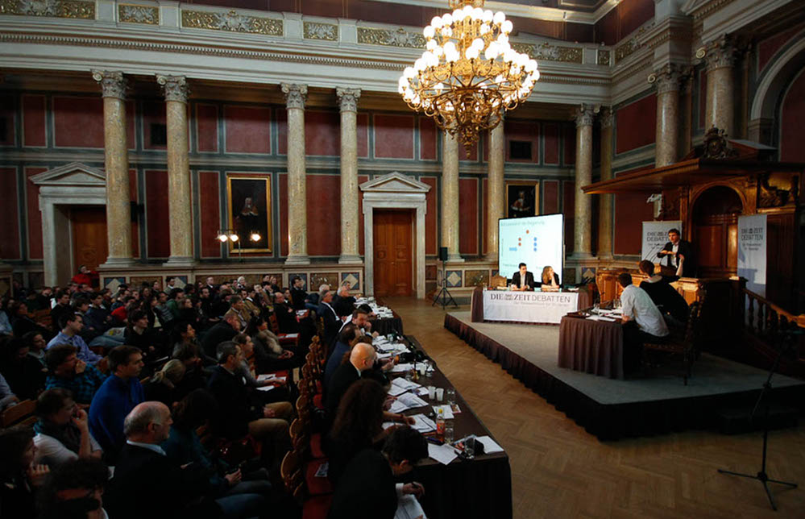

Tallinn EUDC
Important information
- Dates: 14-20 August 2017
- Host organisation: Tallinn University of Technology Debate Society
- Venue: Tallinn University of Technology, Ehitajate tee 5, 19086 Tallinn
- Participants: 280 teams
- Public Finals: Saturday, 19 August 2017
It is our great pleasure to welcome you to the European Universities Debating Championship 2017! Tallinn EUDC will take place from 14 – 20 August 2017 in Tallinn University of Technology (TUT) which is the only campus-type university in the Baltic countries and one of the most compact university campuses in Europe. The tournament will gather 800 young people from all over Europe. The tournament is organised by Tallinn University of Technology Debating Society and as a technical university, it shall emphasise the role that information technology plays in our lives in a setting of traditional Estonian culture.
We have been hard at work organising this tournament so that you could enter the world of EUDC and experience the magic yourself. We could not be happier to welcome you to the European University Debating Championship 2017!
The European University Debating Championship
The European Universities Debating Championship (EUDC) is an annual tournament in which debating societies from Universities across Europe compete. The first championship took place in Rotterdam in 1999, when EUDC was a 32 team tournament with only a handful universities participating. Since then the competition has grown steadily and Tallinn EUDC is expected to host a total of 280 teams from all over the continent.
University Debating
In competitive university debating students train their argumentative skills as well as their general knowledge and rhetorical abilities. Students hold speeches on current topics and try to convince judges of their stance. The most prevalent format (British Parliamentary Format) imitates the debates taking place in the Lower House of the British Parliament. Eight competitors in teams of two argue either for or against a motion which is revealed fifteen minutes before the debate begins. There are four positions which each team is randomly assigned to. Although two teams will argue for and two teams will argue against, each team must bring a unique case in order to explain why their side is right. Speeches last seven minutes and alternate between sides, with those arguing for the motion going first. Experienced adjudicators decide whose arguments were more persuasive and give feedback for the students to improve. The best debaters compete at huge competitions such as the European Championship.
Since the teams do not get more than fifteen minutes preparation time for each debate, debaters gather vast amounts of general knowledge in order to prevail in the debates. The speeches do not only train the students’ eloquence and public speaking but also hones their ability to logically analyse arguments. The judges assess speeches based primarily on the depth of explanation as well as the speaker’s delivery style. Debating is therefore seen as valuable training for ambitious students who utilise these skills in their future careers as well as their present studies. Debating teaches students to think critically and maintain an awareness of current issues. The debates usually relate to current issues faced by the European Union, governments, individuals or corporations. And as a result, debaters are exposed to a broad range of opinions on issues as diverse as war and social justice. Therefore debating is vital ‘school of democracy’ for future decision makers.
University debaters worldwide build a strong international network. All over the world, debating is seen as one of the most powerful tools of education and the international debating community is strongly connected across borders. In general, debating and Tallinn EUDC foster cultural exchange and understanding between students in Europe and beyond.
Search for more:
International Debate Association (IDEA)